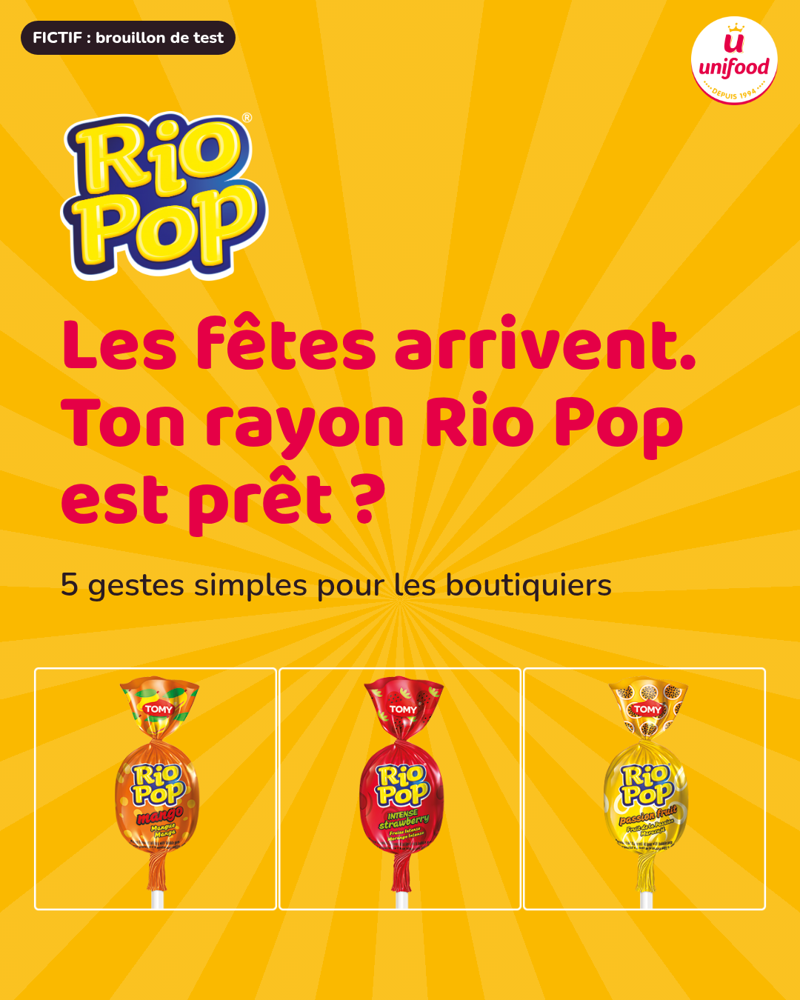
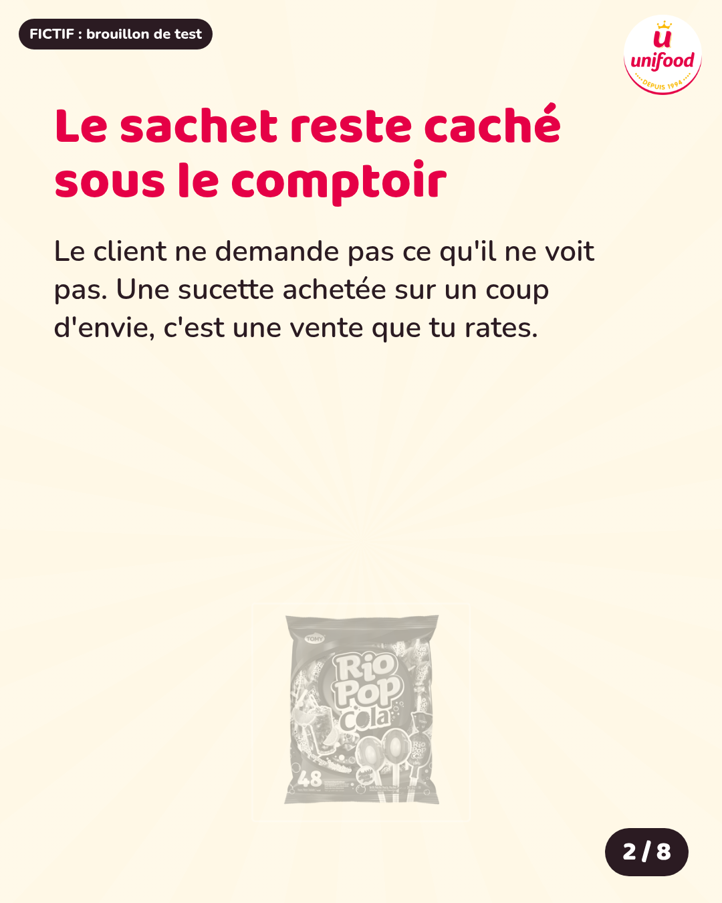
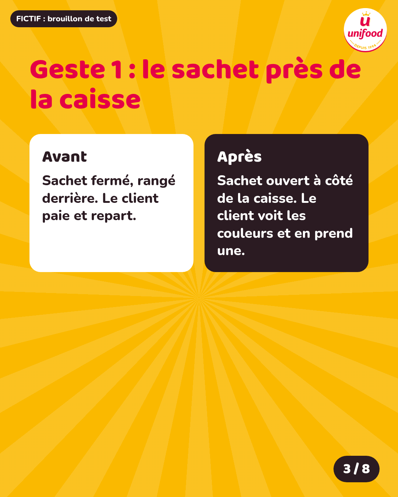
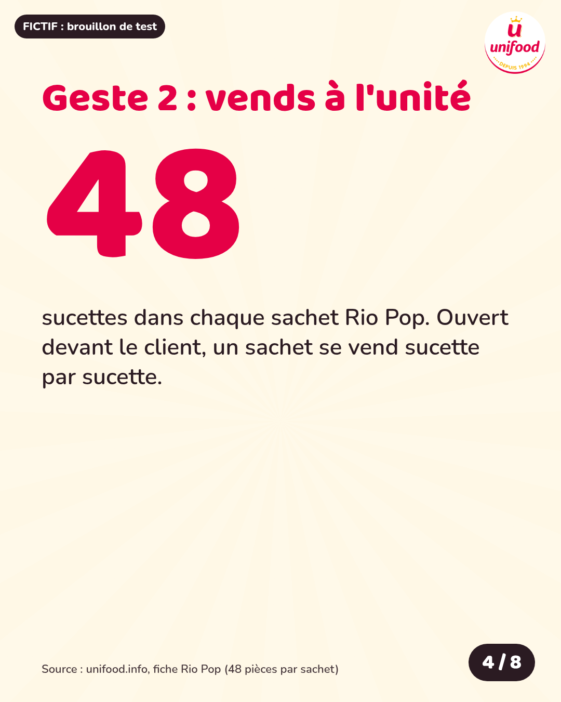
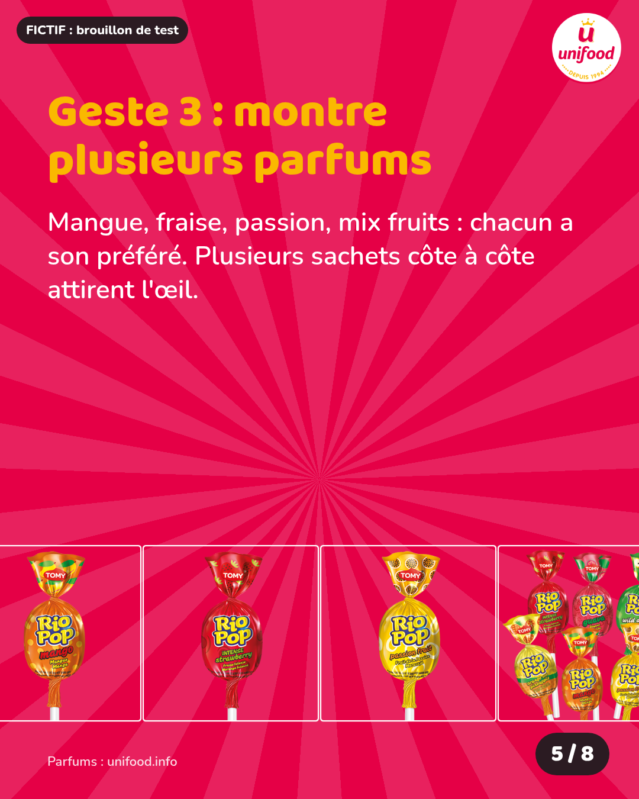
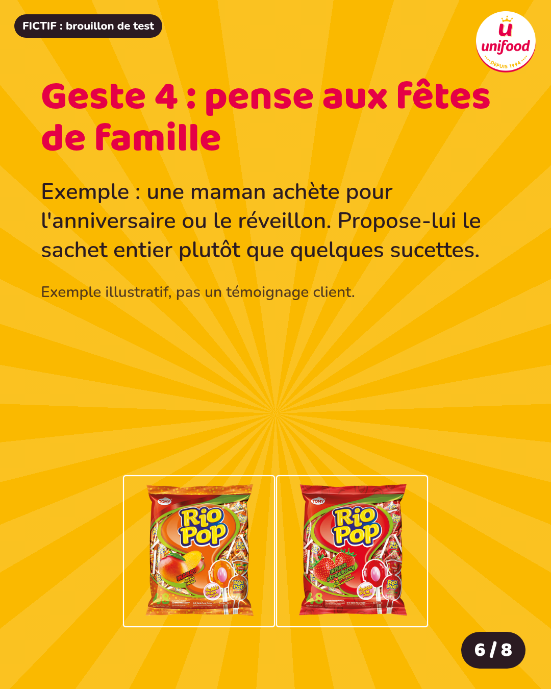
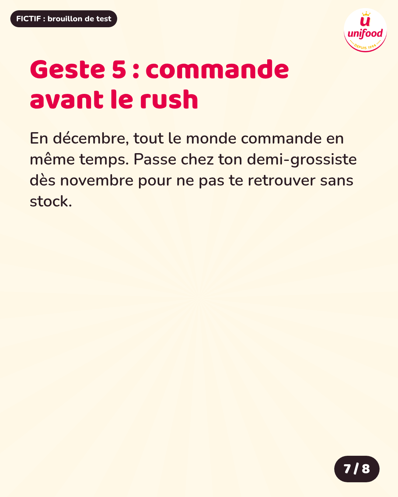
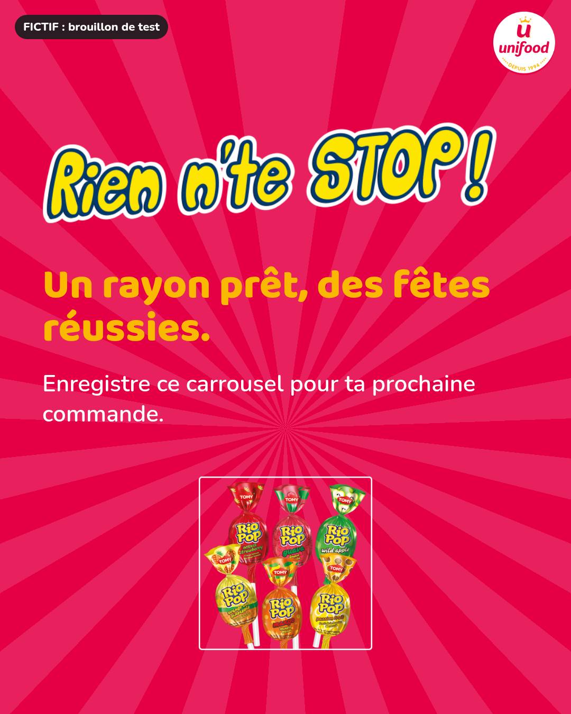

Les fêtes arrivent et ton rayon Rio Pop n'est pas encore prêt ? Voici 5 gestes simples pour vendre plus pendant les fêtes. Le client n'achète pas ce qu'il ne voit pas. Un sachet caché sous le comptoir, ce sont des ventes ratées. • Pose le sachet ouvert près de la caisse. • Vends à l'unité : chaque sachet contient 48 sucettes. • Montre plusieurs parfums côte à côte : mangue, fraise, passion, mix fruits. • Pense aux mamans qui préparent un anniversaire ou le réveillon. • Passe chez ton demi-grossiste dès novembre, avant le rush. Rio Pop, rien n'te stop ! Quel parfum part le plus vite dans ta boutique ? Dis-le en commentaire. #Commerce #Boutique #RioPop #Abidjan #CoteDIvoire